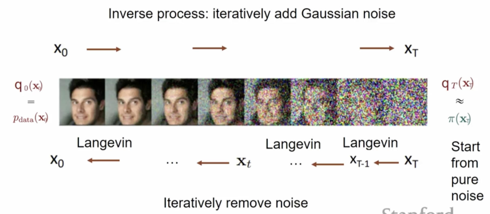
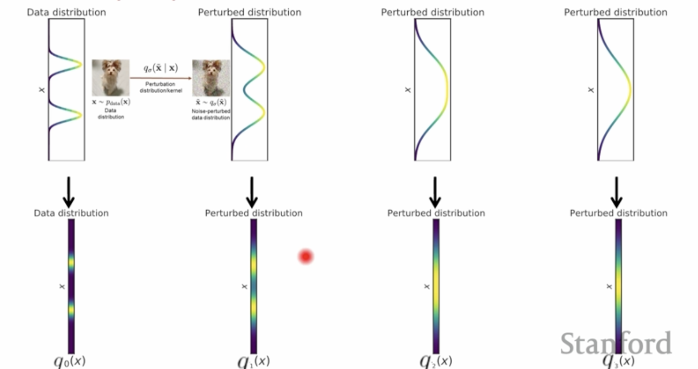

Score Based Diffusion Models
Quick Recap: Score Based Models
From our exploration of score-based generative modeling, we learned several key concepts:
Score Function: The gradient of the log probability density, \(\nabla_x \log p(x)\), which points "uphill" in the probability landscape toward high-density regions.
Score Matching: A training objective that learns the score function by minimizing the Fisher divergence between the learned and true score functions.
Score Matching Objective: The original score matching objective is:
where \(\text{tr}(\nabla_x s_\theta(x))\) is the trace of the Jacobian of the score function, which is computationally expensive to evaluate.
Denoising Score Matching (DSM): A practical variant that trains the score function to predict the direction from noisy to clean data, avoiding the need to compute the true score function.
DSM Objective: The denoising score matching objective is:
where \(s_\theta(x)\) learns to predict the score function of the noise-perturbed distribution, and \(\frac{y - x}{\sigma^2}\) is the target score function that points from noisy sample \(x\) toward clean data \(y\).
Langevin Dynamics: A continuous-time stochastic process that uses the score function to guide sampling:
Discretized Form: For practical implementation:
Mode Collapse: Standard Langevin dynamics struggles with multi-modal distributions and low-density regions.
Annealed Langevin Dynamics: Addresses this by using multiple noise scales \(\sigma_1 < \sigma_2 < \ldots < \sigma_L\), creating a sequence of increasingly noisy distributions that are easier to sample from.
Stochastic Differential Equations (SDEs): General framework for continuous-time stochastic processes:
Reverse SDE: Any SDE has a corresponding reverse process for sampling:
Time-Dependent Score Models: Neural networks that learn \(s_\theta(x, t) \approx \nabla_x \log p_t(x)\) for continuous-time processes.
Key insights:
- Score functions act as denoisers: They point from noisy to clean data
- Multiple noise scales help: Annealing from high to low noise improves sampling
- Continuous-time generalizes discrete: SDEs provide a unified framework
- Reverse processes enable generation: The reverse SDE naturally incorporates the score function for sampling
Diffusion Models as Score Based Models & Hierarchical VAEs
Iterative Denoising perspective: In annealed Langevin dynamics with multiple noise scales, the sampling process can be viewed as iterative denoising. Starting from high noise levels and gradually reducing noise, each step uses the score function to denoise the sample, progressively refining it from a noisy state toward the clean data distribution.
Training perspective: The inverse process involves iteratively adding Gaussian noise to clean data during training. By corrupting data with increasing levels of noise, the model learns to predict the score function at each noise level, enabling it to reverse the corruption process during sampling.

VAE Perspective: This entire framework can be viewed as a VAE where:
-
Encoder process: The forward process that converts clean data to noise through iterative corruption
-
Decoder process: The reverse process that generates samples by iteratively denoising from noise
Noise Perturbation process: Each \(x_t\) represents a noise-perturbed density that is obtained by adding Gaussian noise to \(x_{t-1}\). This creates a Markov chain where each step adds a small amount of noise to the previous state.
We can write the forward process as a conditional distribution:
where \(\beta_t\) is the noise schedule that determines how much noise is added at each step.
The joint distribution of the entire forward process is:
This factorization follows from the chain rule of probability and the Markov property of the forward process:
Chain Rule: For any joint distribution, we can write:
Markov Property: In the forward process, each \(x_t\) depends only on \(x_{t-1}\), not on earlier states:
Substituting the Markov property into the chain rule:
This can be written compactly as:
This represents the probability of the entire noise corruption sequence, where each step depends only on the previous step (Markov property).
Comparison with VAEs: In a typical VAE, you would take \(x_0\) and map it via a neural network to obtain some mean and standard deviation to parameterize the distribution of the latent variable. Here, we obtain the distribution of the latent variables through the predefined noise corruption procedure we defined above, rather than learning it with a neural network.
Multistep transitions: A key advantage of this process is that we can compute transitions between any two time steps efficiently. For example, we can directly compute \(q(x_t | x_0)\) without going through all intermediate steps.
Starting from \(x_0\), we can write:
where \(\alpha_t = 1 - \beta_t\) and \(\epsilon_{t-1} \sim \mathcal{N}(0, I)\).
Recursively substituting:
Continuing this recursion, we get:
where \(\bar{\alpha}_t = \prod_{s=1}^t \alpha_s\) and \(\epsilon \sim \mathcal{N}(0, I)\).
Result: The multistep transition is:
This allows us to sample \(x_t\) directly from \(x_0\) in a single step, making training much more efficient.
Diffusion analogy: We can think of this as a diffusion process. This is like a diffuser where given an initial state, we keep adding noise at every step. This is analogous to heat diffusion in a space- just as heat spreads out and becomes more uniform over time, our data distribution becomes increasingly noisy and uniform Gaussian as we add more noise at each step.
The process gradually "diffuses" the structured information in the data into random noise, creating a smooth transition from the complex data distribution to a simple Gaussian noise distribution.

The ideal sampling process would be:
- Sample \(x_T\) from \(\pi(x_T)\). Start with pure noise from the prior distribution
- Iteratively sample from the true denoising distribution \(q(x_{t-1} | x_t)\).
This would generate samples by following the exact reverse of the forward diffusion process, gradually denoising from pure noise back to clean data.
The challenge however, is that we don't know the true denoising distributions \(q(x_{t-1} | x_t)\). While the forward process \(q(x_t | x_{t-1})\) is predefined and tractable, the reverse process is not.
However, we can learn an approximation \(p_\theta(x_{t-1} | x_t)\) which is a Gaussian distribution with learned parameters:
where \(\mu_\theta(x_t, t)\) is a neural network that learns the mean of the denoising distribution, and \(\sigma_t^2 I\) is the fixed variance schedule.
This is similar to a VAE decoder:
VAE Decoder:
Diffusion reverse process:
The diffusion decoder \(p_\theta(x_{t-1} | x_t)\) is trying to learn to approximate the true denoising distributions \(q(x_{t-1} | x_t)\).
The joint distribution of the learned reverse process is:
Let's derive the joint distribution of the learned reverse process step by step.
In the general case of \(n\) random variables \(X_1, X_2, \ldots, X_n\), the values of an arbitrary subset of variables can be known and one can ask for the joint probability of all other variables. For example, if the values of \(X_{k+1}, X_{k+2}, \ldots, X_n\) are known, the probability for \(X_1, X_2, \ldots, X_k\) given these known values is:
This is the fundamental definition of conditional probability for multiple random variables.
For any three events \(A\), \(B\), and \(C\), the joint conditional probability is defined as:
We can write the joint probability \(P(A, B, C)\) using the chain rule:
Substituting this into our definition:
We can write \(P(B, C)\) as:
The \(P(C)\) terms cancel out:
The learned reverse process consists of a sequence of conditional distributions:
where \(\mu_\theta(x_t, t)\) is a neural network that learns the mean of the denoising distribution.
For the joint distribution \(p_\theta(x_0, x_1, \ldots, x_{T-1} | x_T)\), we can apply the chain rule:
In the reverse process, we assume that each \(x_{t-1}\) depends only on \(x_t\), not on future states. This is the reverse Markov property:
Substituting the reverse Markov property into the chain rule:
This can be written compactly as:
To get the complete joint distribution, we need to include the prior distribution over \(x_T\):
A crucial aspect of the diffusion process is choosing the values of \(\bar{\alpha}_t\) such that after many steps, we are left with pure noise. This ensures that the forward process converges to a simple, known distribution.
Common choices for the noise schedule include:
- Linear Schedule: \(\beta_t = \frac{t}{T} \cdot \beta_{\text{max}}\)
- Cosine Schedule: \(\beta_t = \cos\left(\frac{t}{T} \cdot \frac{\pi}{2}\right)\)
- Quadratic Schedule: \(\beta_t = \left(\frac{t}{T}\right)^2 \cdot \beta_{\text{max}}\)
Example: For a linear schedule with \(\beta_{\text{max}} = 0.02\) and \(T = 1000\), we get \(\beta_1 = 0.00002\), \(\beta_{500} = 0.01\) and \(\beta_{1000} = 0.02\).
Once we have trained the diffusion model and learned the reverse process \(p_\theta(x_{t-1} | x_t)\), we can generate new samples by running the reverse process. Here's how sampling works.
Sample \(x_T\) from the prior distribution \(x_T \sim \mathcal{N}(x_T; 0, I)\).
For \(t = T, T-1, \ldots, 1\), sample from the learned reverse process \(x_{t-1} \sim p_\theta(x_{t-1} | x_t) = \mathcal{N}(x_{t-1}; \mu_\theta(x_t, t), \sigma_t^2 I)\).
After \(T\) steps, we obtain \(x_0\), which is our generated sample.
This entire diffusion framework can be viewed as a Variational Autoencoder (VAE) with a crucial difference: the encoder is fixed and predefined, while only the decoder is learned.
Standard VAE Structure:
-
Encoder: \(q_\phi(z | x) = \mathcal{N}(z; \mu_\phi(x), \sigma_\phi^2(x) I)\)
-
Decoder: \(p_\theta(x | z) = \mathcal{N}(x; \mu_\theta(z), \sigma_\theta^2(z) I)\)
-
Prior: \(p(z) = \mathcal{N}(z; 0, I)\)
Vanilla VAE ELBO (Non-KL form):
Hierarchical VAE Structure (z₂ → z₁ → x):
-
Encoder: \(q_\phi(z_1, z_2 | x) = q_\phi(z_1 | x) \cdot q_\phi(z_2 | z_1)\)
-
\(q_\phi(z_1 | x) = \mathcal{N}(z_1; \mu_\phi(x), \sigma_\phi^2(x) I)\)
-
\(q_\phi(z_2 | z_1) = \mathcal{N}(z_2; \mu_\phi(z_1), \sigma_\phi^2(z_1) I)\)
-
Decoder: \(p_\theta(x, z_1 | z_2) = p_\theta(x | z_1) \cdot p_\theta(z_1 | z_2)\)
-
\(p_\theta(x | z_1) = \mathcal{N}(x; \mu_\theta(z_1), \sigma_\theta^2(z_1) I)\)
-
\(p_\theta(z_1 | z_2) = \mathcal{N}(z_1; \mu_\theta(z_2), \sigma_\theta^2(z_2) I)\)
-
Prior: \(p(z_2) = \mathcal{N}(z_2; 0, I)\)
Hierarchical VAE ELBO (Non-KL form):
Following the hierarchical VAE formulation, we can write the ELBO for diffusion models. In diffusion models, we have a sequence of latent variables \(x_1, x_2, \ldots, x_T\) where \(x_T\) is the most abstract (pure noise) and \(x_0\) is the data.
Diffusion Model Structure (x_T → x_{T-1} → ... → x_1 → x_0):
-
Encoder: \(q(x_1, x_2, \ldots, x_T | x_0) = \prod_{t=1}^T q(x_t | x_{t-1})\) - Fixed noise corruption process
-
Decoder: \(p_\theta(x_0, x_1, \ldots, x_{T-1} | x_T) = \prod_{t=1}^T p_\theta(x_{t-1} | x_t)\) - Learned denoising process
-
Prior: \(p(x_T) = \mathcal{N}(x_T; 0, I)\)
Diffusion Model ELBO (Non-KL form):
The Negative Evidence Lower BOund (NELBO) is the negative of the ELBO, which is what we actually minimize during training:
This can be rewritten as:
The decoder learns to predict the mean function \(\mu_\theta(x_t, t)\) for the reverse process. Let's derive how this function is parameterized.
The true reverse process \(q(x_{t-1} | x_t, x_0)\) can be derived using Bayes' theorem. For Gaussian distributions, this gives us:
where it can be shown that:
and:
The learned reverse process is:
Since we want the learned process to approximate the true reverse process, we parameterize \(\mu_\theta(x_t, t)\) to match the form of \(\mu_t(x_t, x_0)\):
where \(\epsilon_\theta(x_t, t)\) is a neural network that predicts the noise \(\epsilon\) given \(x_t\) and \(t\).